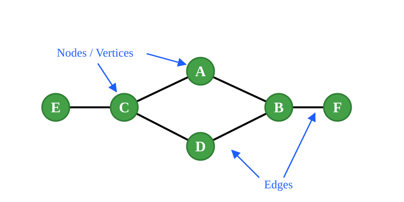
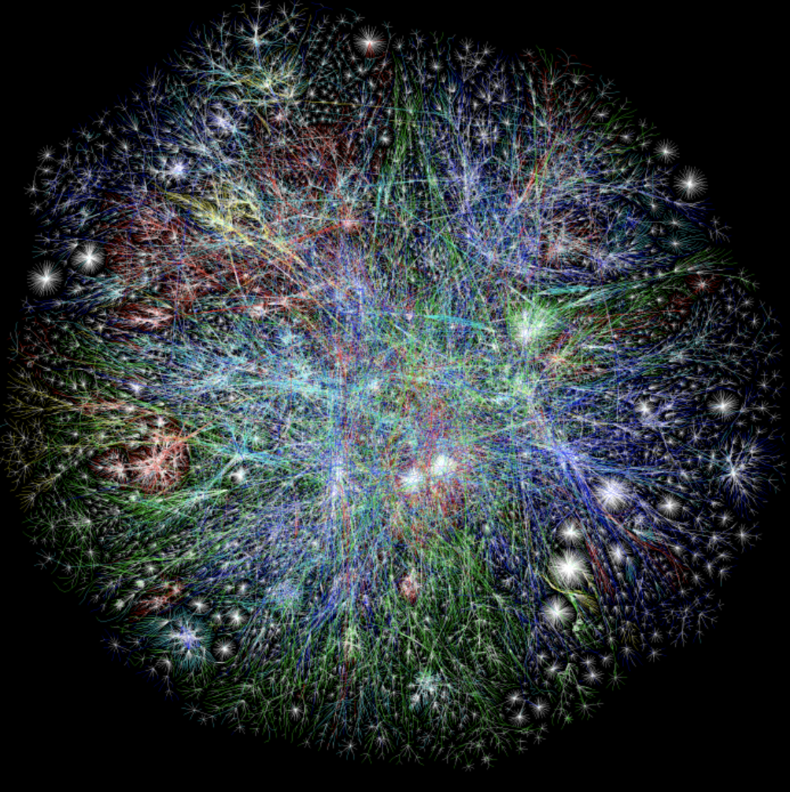
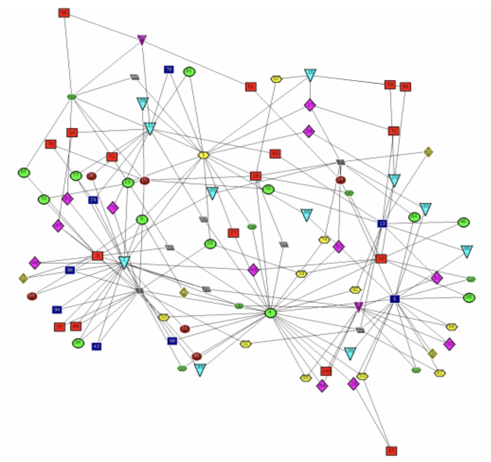
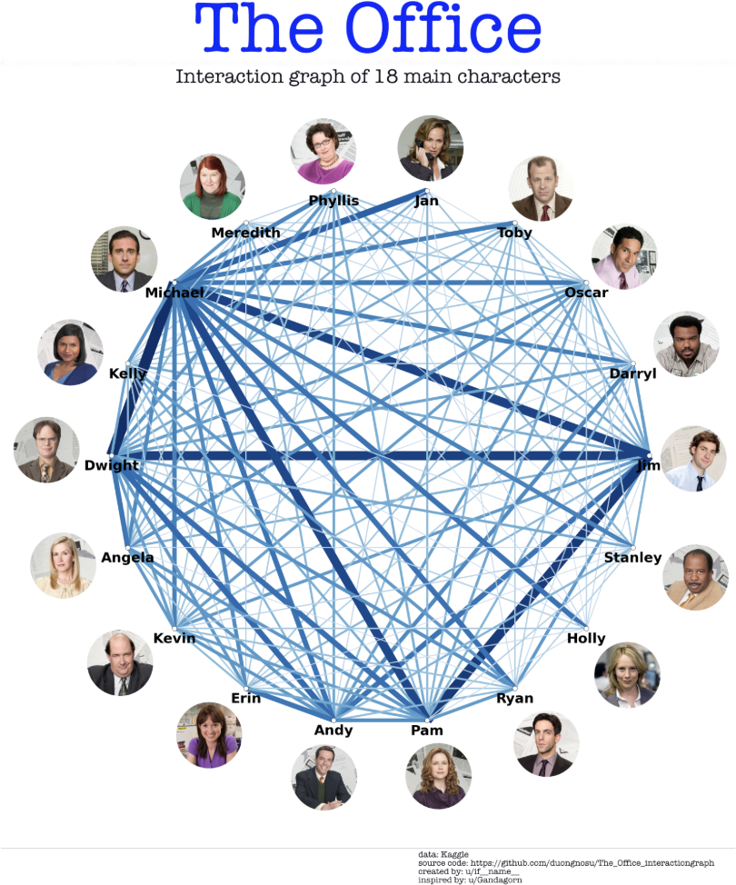
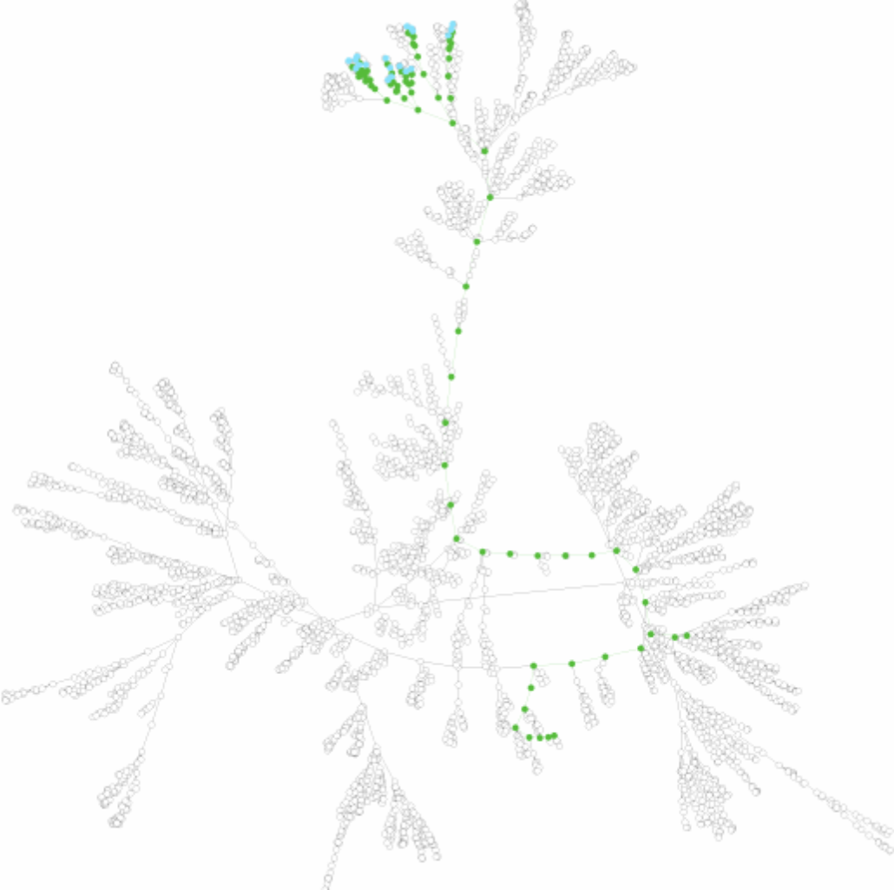
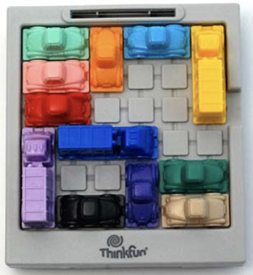
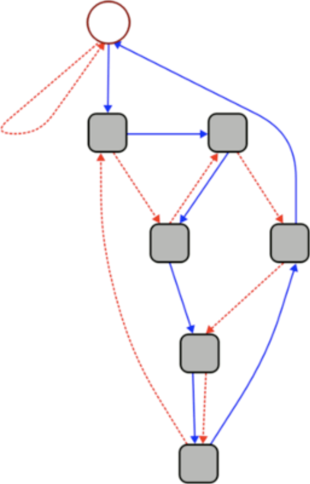
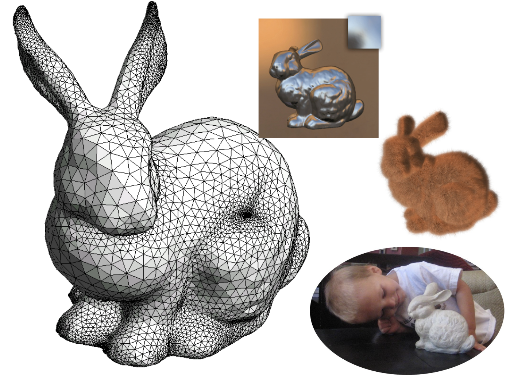
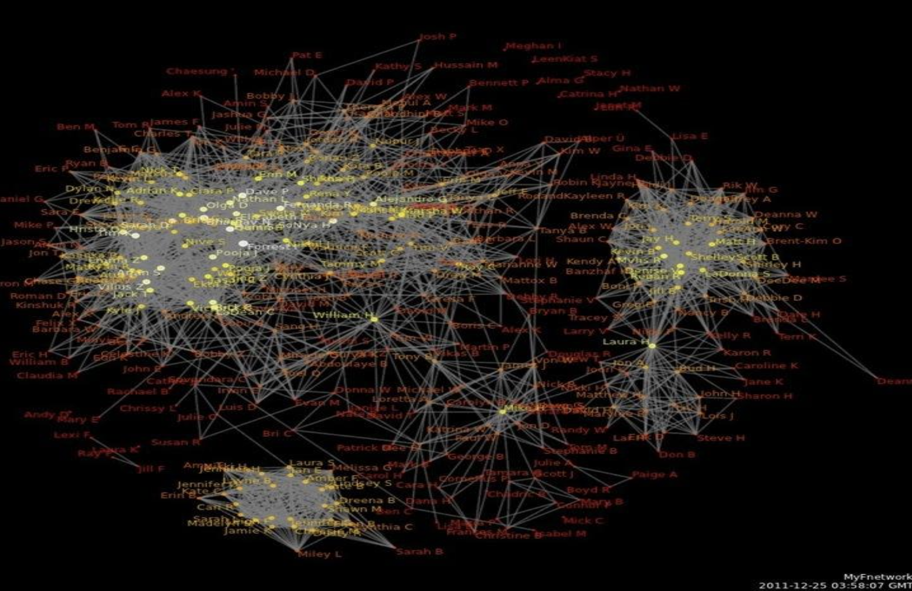

CPSC 203, 2026 W1
October 29, 2026

A graph is a pair of lists \(G = (V,E)\).
Consider the neighbourhood of a pixel in our Voronoi algorithm.
Our original visualization
4 neighbours
8 neighbours

In this case:
The degree of a vertex is the number of edges to which it connects.
The nodes of this graph are labelled by their shape and colour.

What is special about this labelling?

A graph is complete if it contains all possible edges.
How many edges in a complete graph of \(n\) vertices?


A path is a sequence of vertices with an edge between every adjacent pair of vertices.

Consider the number 3703.
In a directed graph, edges connect nodes only in one direction.

In a planar graph, the vertices can be placed on the plane and the graph drawn without any crossing edges.
A graph \(G\) is defined by a set of vertices \(V\) and a set of edges \(E\).
Algorithm complexity is often described in terms of the number of vertices.
Open today’s activity. You’ll work through some graph size calculations.
Social Network (Cinda’s Facebook in 2012)

A graph is connected if there is a path between any pair of vertices.
A connected component is a subgraph which is connected.